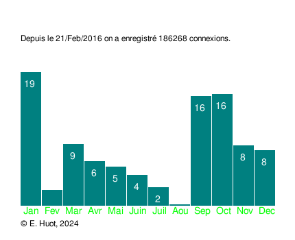

The proposed SAÉ consists in writing a program in C language allowing to generate statistics on the connections of a web server. The program will have three types of interfaces: by default, an interface for the web and, depending on the call options, a graphical interface and a text interface.
You will have to:
To realize this SAÉ you will work under Linux using exclusively the virtual machine that you will find on the eCampus space SAE prog_(RT1SA05), file SAE15_Debian11_64bits.ova.
To realize this SAÉ you will work under Linux using exclusively the virtual machine that you will
find on the eCampus space SAE prog_(RT1SA05), file SAE15_Debian11_64bits.ova or if you
are running an ARM architecture (typically on Apple Silicon based Macintosh)
SAE15_Debian11_ARM64bits.ova
If you have not already done so, install VirtualBox on your host machine. The provided virtual machine is small enough to fit on a 4GB USB stick. Download it, copy it to a directory on your host machine where you have write access. Then in Virtual Box, proceed as follow: File menu > Import appliance > select the file SAE15_Debian11_64bits.ova.
The Apache web server is already installed and configured to accept CGI. The Apache configurations are standard: the root of the site is /var/www/html/, the CGI directory is /usr/lib/cgi-bin/ (to write access to these two directories you will have to use the sudo command).
RT1SA05-2025.tgz and
RT1SA05-2025-ARM.tgz. Download the one corresponding to your architecture from the
virtual machine, retrieve this file (it is usually downloaded in the ~/Téléchargement
directory) and place it in /home/etudiant. Then, open a command terminal and do:
etudiant@virtualdebian:~$ tar xvf RT1SA05-2025.tgz
etudiant@virtualdebian:~$ cd RT1SA05/
etudiant@virtualdebian:~/RT1SA05$ make install
etudiant@virtualdebian:~/RT1SA05$ firefox "http://127.0.0.1/index.html"
Thus, you are ready to work. A sample code can be found in the directory /home/etudiant/RT1SA05/src/
but the Makefile to compile and install the program is not provided.
The figure below visualizes the execution of the program /usr/lib/cgi-bin/versiondynamique (you do not have the source code of this program). Here, it is used in its default version (ie. the web interface):
The figure below shows a screen shot of the same program, using its graphical interface,
while it is launched with its -gr option. Note that you are not asked to view this image via the web interface:

The figure below shows a screen shot of the same program, using its textual interface, while it is launched with its -txt option. Note that you are not asked to view this image via the web interface: